Hidden Talent: Using Data to Find Undervalued U23s in Europe's Big 5 Soccer Leagues
A professional scouting feature blending soccer intelligence with modern data science
By Michael Strommer | January 09, 2026

Abstract
Lamine Yamal, Jamal Musiala, Jude Bellingham — these names define a generation of footballers who seem to have been at the top forever, yet all three are still 23 or younger. Their market values rise at an astonishing pace, often outpacing what they presently deliver on the pitch. The real question for scouts and analysts is not whether they’re good — they obviously are — but whether their valuations reflect fundamentals or simply narrative momentum. And more importantly: are there lesser-known U23 players whose performances mirror these stars, but whose price tags remain within reach?
In this article, I merge season-level performance data from FBref with market valuations from Transfermarkt, apply machine learning to estimate “Expected Market Values” for U23 players in Europe’s top five leagues, and identify where the market is mispricing talent. The goal is not to replace scouts; rather, it is to give them an evidence-based reference point for separating hype from production and surfacing players who deserve closer attention.
The Problem with Hype
The 2024–25 season provides a striking example of the disconnect between narrative and output. Lamine Yamal, still only 17, carried a Transfermarkt valuation of €180 million while contributing 9 goals and 13 assists in just over 30 league games. Michael Olise, newly arrived in Munich, posted 12 goals and 15 assists in just 26 matches — yet his valuation sat around €80 million.
By pure per-90 production, Olise outperformed Yamal, but the market placed a €100 million premium on the Barcelona winger. This kind of discrepancy is increasingly common. Modern transfer valuations behave much like a sentiment-driven stock market: prices swing not only with performance but with storyline, media exposure, league strength, and perceived potential. One highlight reel can move a player’s price more than a month of steady contribution.
For clubs, this volatility is a threat and an opportunity. The only way to navigate it responsibly is to anchor evaluations in fundamentals — just as value investors do in financial markets. With the right tools, a club can distinguish between brilliance that already exists and brilliance the world simply hopes will appear.
Building a Data-Driven Talent Lens
To counteract the noise, I constructed a player-level dataset of U23 footballers in the European Big 5 Leagues (Premier League, La Liga, Bundesliga, Serie A, and Ligue 1). After filtering for players with at least 400 league minutes and merging FBref performance statistics with Transfermarkt valuations, the final sample consisted of 834 outfield players. All production metrics were standardized on a per-90 minutes basis, and contextual variables such as league and usage were included to reflect differences in competitive environment and managerial trust.
Using this data, I applied t-SNE to compress each player’s multidimensional performance profile into a two-dimensional map. Even though t-SNE is primarily a visualization tool rather than a clustering algorithm, the resulting landscape naturally revealed four archetypes.

- 1. Cluster 0 – “Developmental Prospects” (purple)
- • Younger players with limited minutes and relatively muted per-90 production
- • A wide base of the talent pyramid; many may still be adjusting to the league
- • Not “wonderkids” yet, but fertile ground for future break-outs
- 2. Cluster 1 – “Creators / Technical Playmakers” (red)
- • High values in xA, xG and progressive metrics (PrgP, PrgC, PrgR)
- • Includes elite wingers and attacking midfielders like Lamine Yamal or Jude Bellingham
- • These are the “magicians” and primary chance-creators in possession
- 3. Cluster 2 – “Finishers / Direct Attackers” (green)
- • High Gls/xG per 90 with relatively lower creative metrics
- • Classic 9s and direct wide forwards such as Nicolas Jackson or Benjamin Šeško
- • Their job is to attack space and finish moves
- 4. Cluster 3 – “Defensive Anchors (CB/DM)” (orange)
- • Very low direct goal contributions, but high tactical value
- • Center-backs and defensive midfielders responsible for buildup, rest-defense and stability
- • Includes players on the trajectory of William Saliba or Moisés Caicedo
These archetypes matter because they allow us to compare players within the roles they actually play. A direct attacker should not be compared to a deep-lying playmaker, and a center-back should not be judged on the same scoring expectations as a winger. Clustering organizes the landscape so we can ask: within each role, who is delivering the most value per minute? And who is being priced as if they belong to another universe entirely?
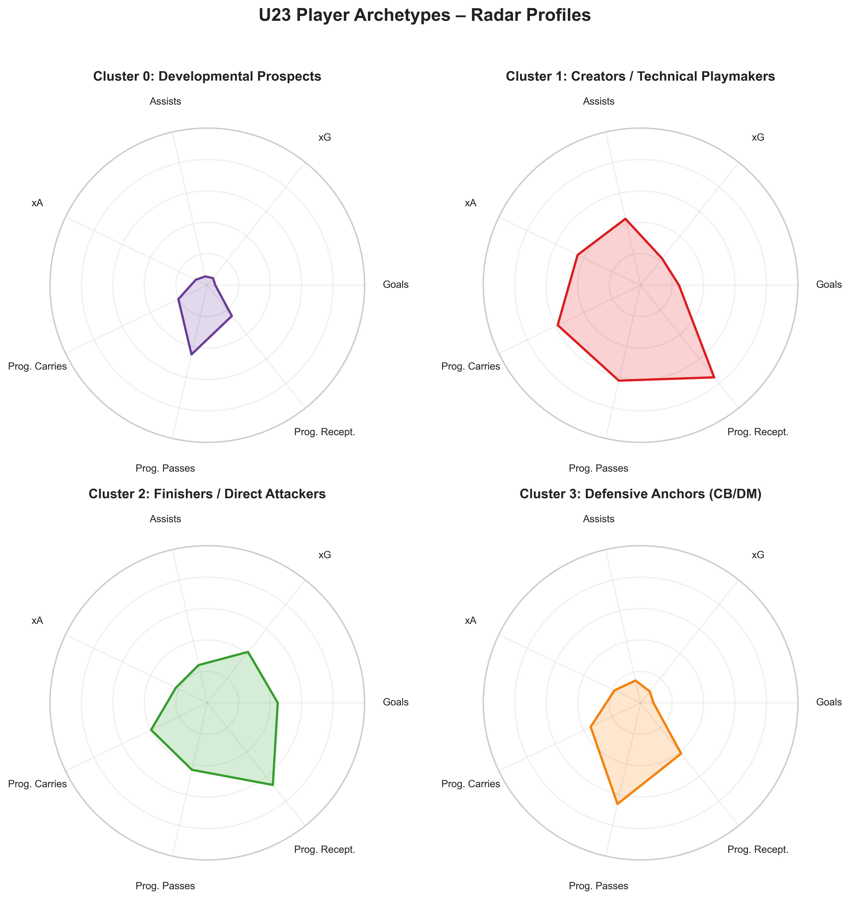Predicting Fair Value
With the positional archetypes established, I trained an XGBoost regression model to predict market value directly from performance and contextual features. On a held-out validation set, the model explained roughly 57 percent of the variation in market values — not perfect, but respectably strong in a domain where narrative can overwhelm logic.
The model generates an Expected Market Value (EMV) for every player. Comparing this expected value to the actual Transfermarkt valuation reveals where the market is misaligned. Positive residuals indicate players whose public valuations exceed what their performance warrants; negative residuals point toward players whose contributions are being undervalued by the market.
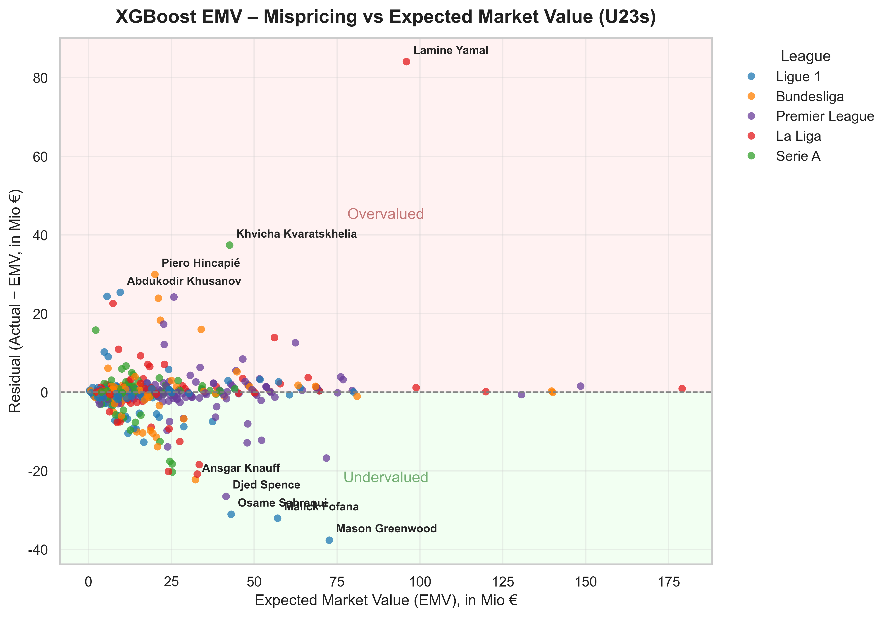This simple idea — the gap between expected and actual price — becomes a powerful scouting signal. In financial terms, it identifies the overbought and the oversold.
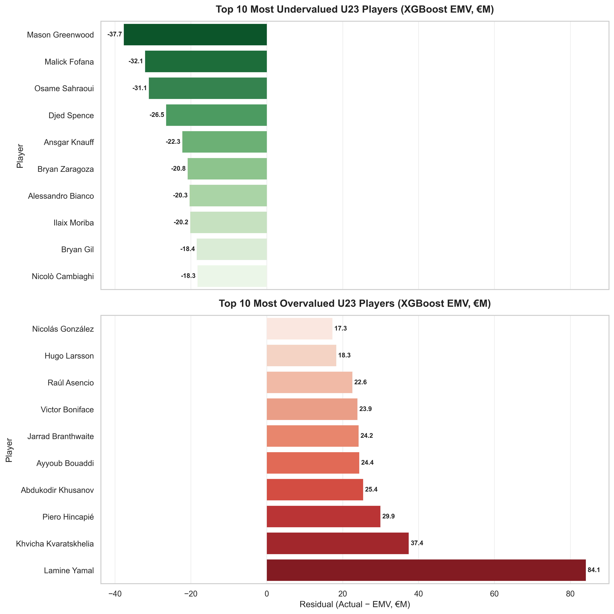Case Studies: Yamal, Greenwood, and Olise
The valuation map brings Lamine Yamal back into focus. According to the model, an appropriate valuation for his current production is roughly €96 million — an enormous figure for a 17-year-old, but still €84 million below his actual valuation. The market is paying heavily for expected future greatness rather than for his current outputs.
On the opposite extreme lies Mason Greenwood at Marseille. With 22 goals and 5 assists in a little over 30 matches, his EMV rises to nearly €73 million, compared with an actual valuation of €35 million. The model flags him as one of the most undervalued U23s in Europe, while also reminding us that it evaluates only on-pitch performance. Off-field risk, which can dramatically affect real-world value, sits outside the scope of this analysis.
Then there is Michael Olise. His numbers and style of play have electrified Bayern, and the model agrees: it estimates an EMV of roughly €81 million, almost exactly matching his actual €80 million valuation.
This near-perfect alignment places him in a rare group of fairly valued elite U23 talents with EMVs greater than €81 million, alongside Rodrygo, Pedri, Cole Palmer, Florian Wirtz, Jamal Musiala, Bukayo Saka, and Jude Bellingham.
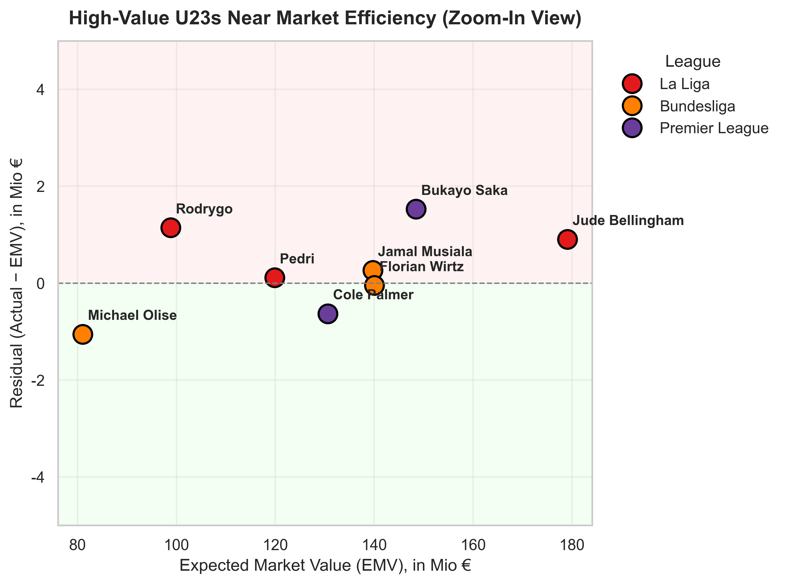Bellingham, for instance, does not lead the sample in goals or assists. Yet, his exceptional progressive passing and carrying metrics elevate his EMV to €179 million — almost identical to his real-world valuation. In such cases, the market appears remarkably efficient.
Value at Realistic Budgets
While nine-digit valuations capture headlines, most clubs operate in the €10–30 million range. To explore that band, I isolated players with expected values below €30 million but whose residuals exceeded €10 million in either direction.
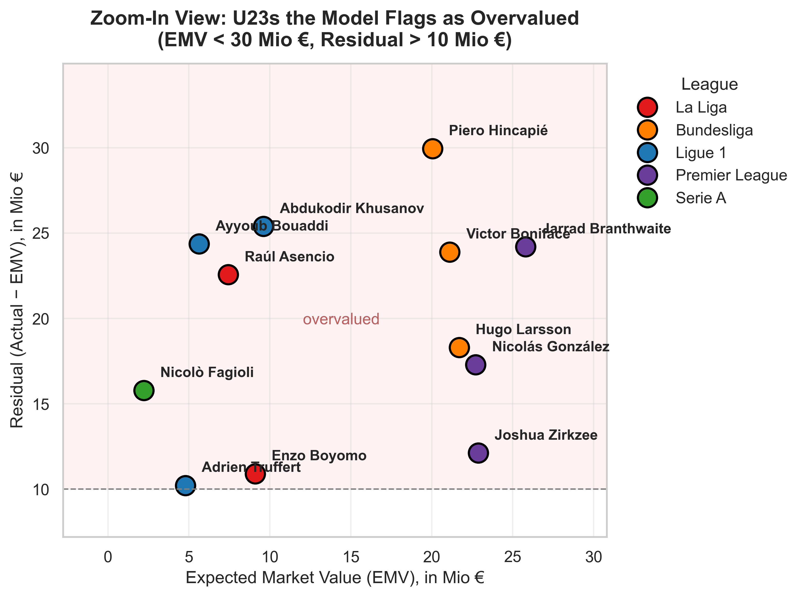Piero Hincapié emerges as one of the most overvalued players in this zone according to the model. His defensive influence for Bayer Leverkusen is significant, but his goal contributions and progressive numbers are relatively muted. This disconnect is less an indictment of his ability and more a reminder that conventional event data does not fully capture defensive quality.
Joshua Zirkzee, now at Manchester United, is another example of a talented forward whose valuation appears to lean more on potential and stylistic appeal than on immediate output. With limited goals and assists in his first fifteen league matches, the model prices him below the market’s expectations.
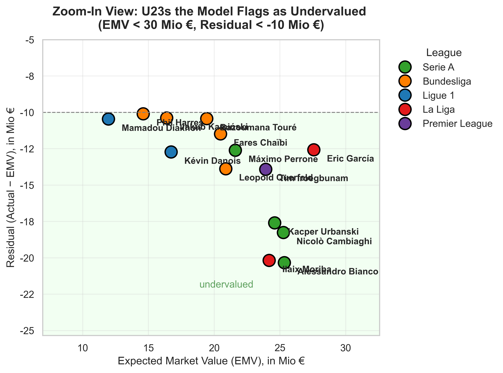The undervalued side offers more encouraging findings. Nicolò Cambiaghi stands out as a player whose progressive carrying and receiving numbers at Bologna far exceed what his valuation implies.
Eric García, thriving as a defensive midfielder at Barcelona, also appears significantly underpriced relative to his contributions in buildup and field progression
These are precisely the kinds of players for whom a data-driven model can open a door. It doesn’t declare them automatic transfer targets, but it does signal that a club should take a closer look — ideally through film study, live scouting, biomechanics, and character assessment.
What Drives Market Value?
To understand why certain players receive higher EMVs than others, I examined the model using SHAP value analysis. The results paint a clear picture of how modern football rewards skill sets.
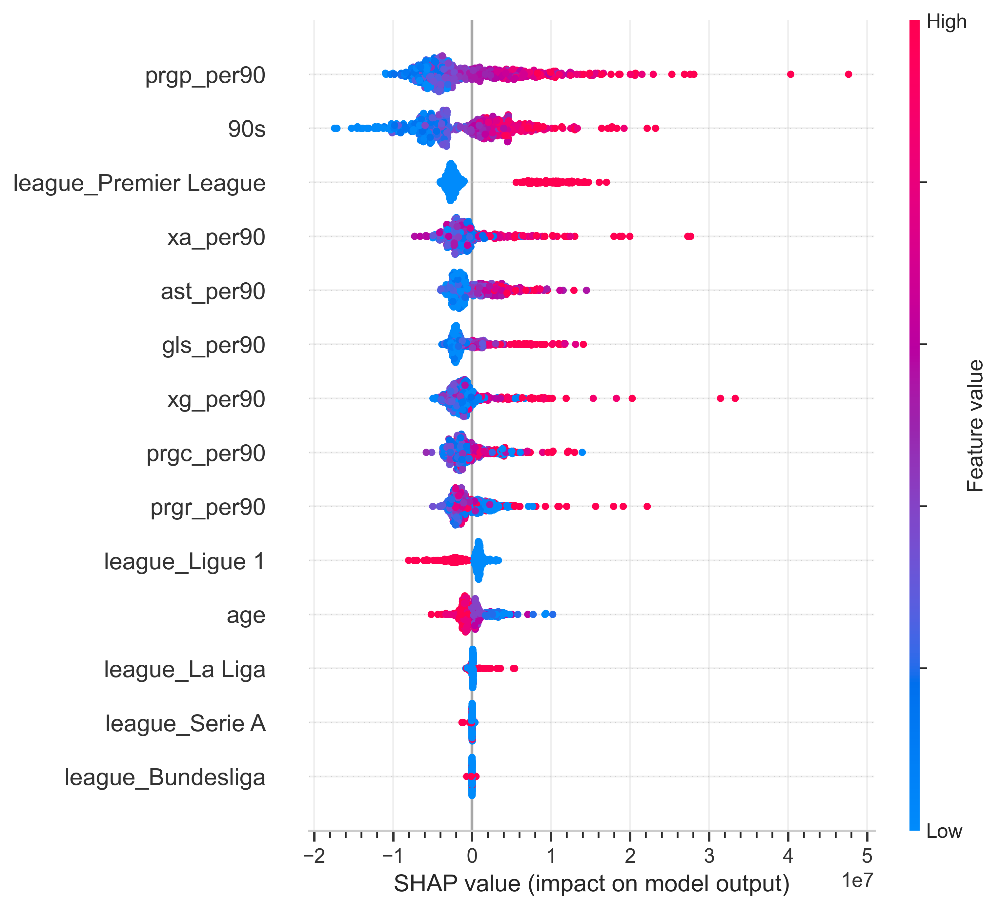Progressive passing (prgp_per90) emerges as the single most influential driver of valuation. Players who regularly break lines and advance possession through incisive passes are consistently priced higher. Minutes played (90s) and appearances also matter greatly, serving as proxies for reliability, tactical fit, and managerial trust.
League effects are pronounced as well. Playing in the Premier League carries a distinct premium, reflecting both commercial visibility and the league’s depth of competition. Ligue 1 players tend to face a mild discount, while La Liga offers a small bump.
Scoring and creative metrics behave as expected: goals (gls_per90), expected goals (xg_per90), assists (ast_per90), and expected assists (xa_per90) all raise EMV, capturing both current output and underlying process.
Age (age) within the U23 group has a slight negative trend, reinforcing the idea that younger players carry resale value and development upside.
Taken together, these findings show that the model values players much like modern recruitment departments do: progress the ball, create chances, accumulate minutes, and do it in a demanding league, and your valuation rises steeply.
Hidden Talent Shortlist Within Each Archetype
Because the analysis combines clustering with valuation modeling, it allows us to surface undervalued players not only in general but within their specific functional roles.
Creators who are producing at elite levels:
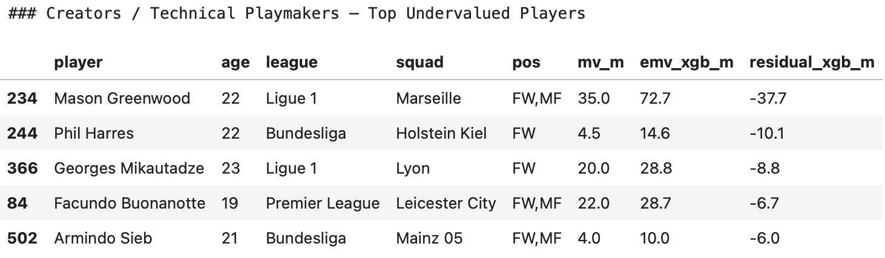Finishers whose xG numbers exceed their goal totals:
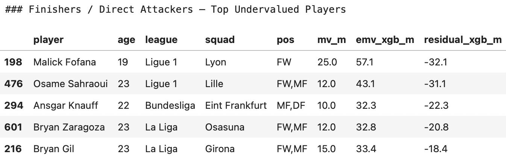Defensive midfielders who drive buildup:
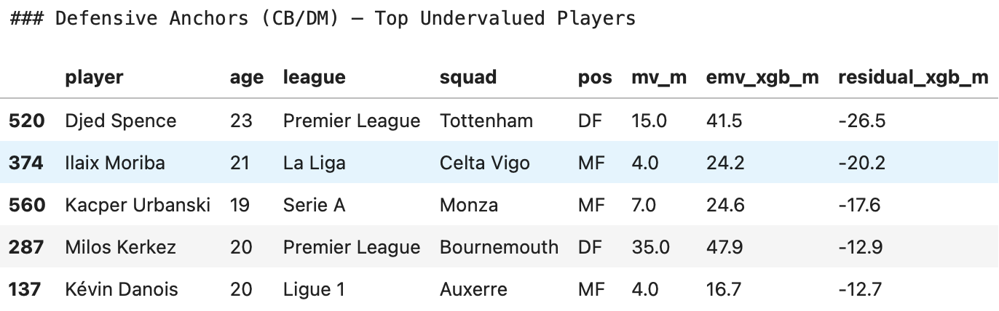Developmental prospects logging promising per-90 numbers
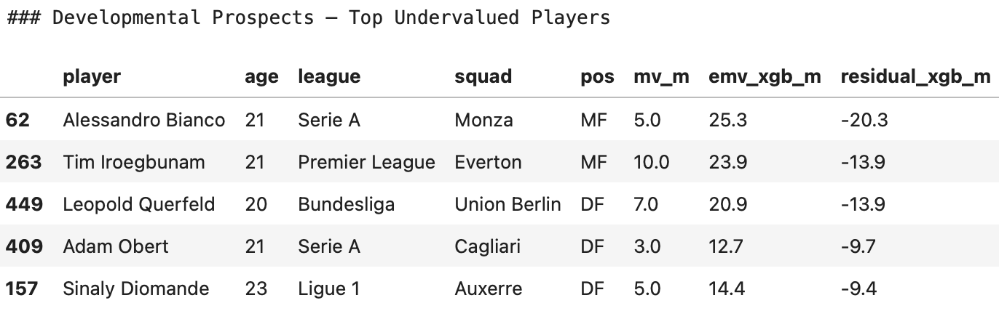This role-specific perspective is particularly useful for scouts. Instead of asking “Who are the top undervalued U23 players?”, the better question becomes “Who are the undervalued creators?”, “Who are the undervalued center-backs?”, or “Which low-minute prospects might break out next season?” The model creates a framework for answering those questions with discipline and consistency.
Using This Tool the Right Way
An EMV model is not a crystal ball. It should be treated as a secondary layer of evaluation rather than as the foundation for transfer decisions. Any serious scouting department will complement it with extensive film analysis, live observation, medical records, psychological evaluation, and background checks. It is also important to acknowledge the model’s limitations: single-season data, imperfect valuation sources, and incomplete defensive metrics can distort the picture in some instances.
Yet when used correctly, the model offers meaningful leverage. It can reveal where the market appears inflated, where underappreciated quality lies, and where a club might find bargains others overlook. It helps separate what a player has done from what the world wishes he will become.
Conclusion
Lamine Yamal is a phenomenon whose valuation is fueled as much by imagination as by current contribution. Michael Olise is an example of a star whose production earns every euro of his price tag. And throughout Europe, a layer of undervalued talent waits beneath the surface, particularly in roles where output is less visible but impact is profound.
In an era where transfer fees behave like volatile equities, the combination of statistical modeling and football expertise provides a powerful way to stay anchored. The best scouts, much like the best investors, ignore noise, trust fundamentals, and are willing to discover value before the rest of the world notices.
References